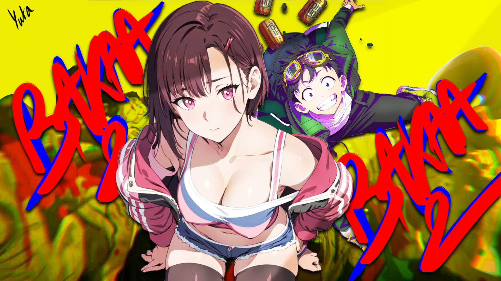

Bakaa II
Bakaa-Music

Ce morceau est beaucoup plus dynamique que mes précédents travaux et s'écarte de mon style habituel.
Il y a deux ans, j'avais créé un son intitulé "Bakaa" qui exprimait mon mal-être et mon insociabilité.
Bien que je lutte encore avec ces sentiments, je progresse.
Ce nouveau morceau m'a fait beaucoup de bien car il m'a permis de libérer ce que j'avais sur le cœur.
J'avoue avoir glissé quelques références à certains jeux pour attirer certains d'entre vous xD.
J'espère que ce morceau trouvera son public, car je pense qu'il est plus "conventionnel".
C'est l'un des rares morceaux où l'anime (Zom 100) n'est pas réellement évoqué, mais l'idée d'un univers chaotique et l'envie de réaliser plein de choses avant de partir, cette sensation de vivre chaque instant comme si c'était le dernier, reflètent parfaitement ce que je ressens dans ma propre vie.
Je préfère largement vivre pleinement plutôt que de mourir avec des regrets.
Je dois dire que ce morceau est une véritable réussite, et bien que j'aie beaucoup peiné à réaliser l'AMV, le résultat final est ma plus grande fierté à ce jour.

Je dis hein hein hein
Yeah yeah hum
J'ai carry les cours mais faut pas que j'arrête là
Ta carrière t'as beau rêvé tu l'auras pas
Désolé la j'ai menti
Tu peux espérer que ca arrive
Tu sais la route est longue mais moi j'roule au pas
La vie est sombre et j'ai des facettes que t'as pas
Plus j'vois le monde plus il tombe bien bas
Et pourrait même tomber comme une tour de kapla
Hey ! T'sais t'as pas grandi
Ceux qui me disent ça je les Hunhunhun
Avec gun t'sais moi j'voudrai bien les tuer mais j'ai pas
Alors Hunhunhun
Tu cherches le paradis c'est ça bah qu' tu y es
J'suis peu sociable et souvent entouré d'yeux
Ferme ta gueule j'ai jamais pensé à épier
alors qu'tous ces hein hein sont des monstres voire pire.
J'fais que d'avancer devant moi tout est Sombre
J'fais que d'monter pourquoi les stats descendent ?
J'avais oublié qu'j'étais né au mois de décembre
Et J'fais que de tousser c'est l'impact des cendres
J'me noyais mais il a sorti la Bouée
Merci ide(ki) tous les jours moi j'Glow UP
Si j'le fais pas dis-moi qui le fera
J'ai rien à perdre avec ma tête de forain
On va pas se mentir,
J'prendrai les coups mais moi je reste entier
Tape pas si fort donc j'ai rien senti
Alors ferme là je te Hunhunhun
Tu sais les soucis moi je m'en débarasse hein
Et les remarques se font même pas ressentir
Et là je pense que les mobs je les ai assez tué
J'peux passer au rang paladin
Hey ! T'sais t'as pas grandi
Ceux qui me disent ça je les Hunhunhun
Avec gun t'sais moi j'voudrai bien les tuer mais j'ai pas
Alors Hunhunhun
Tu cherches le paradis c'est ça bah qu' tu y es
Chui peu sociable et souvent entouré d'yeux
Ferme ta gueule j'ai jamais pensé à épier
alors qu'tous ces hein hein sont des monstres voire pire.
J'suis un garçon triste
Je dors en cours on dirait un zombie
Et t'sais j'en ai rien a faire de bien être habillé
Les animes de sports,
j'aimerai bien être parmi eux
Le bigot sonne
J'me fais pas d'bile
J'ai assez d'xp je sais que ça va me casser les pieds
J'nage dans un monde où demain ressemble à hier
Merde faut que je paie la prod et j'ai même pas 10 E
 J'entends tout
Bon sang regarde-moi la lumière
J'vois rien mis à part mon moi en double
C'est bon signe
Regarde moi l'allumer
J'avance et j'avance j'regarde pas derrière moi
t'façon tu sais que le reste on s'en fout
J'continuerai à faire ce qui me plaît tant que j'assume
J'suis un mec égoïste et j'ai besoin de tout
J'entends tout
Bon sang regarde-moi la lumière
J'vois rien mis à part mon moi en double
C'est bon signe
Regarde moi l'allumer
J'avance et j'avance j'regarde pas derrière moi
t'façon tu sais que le reste on s'en fout
J'continuerai à faire ce qui me plaît tant que j'assume
J'suis un mec égoïste et j'ai besoin de tout
 Hey ! T'sais t'as pas grandi
Ceux qui me disent ça je les Hunhunhun
Avec gun moi j'voudrais bien les tuez mais j'ai pas
Alors Hunhunhun
Tu cherche le paradis sans savoir bah qu' tu y es
Chui très peu sociable et souvent entouré d'yeux
Ferme ta gueule j'ai jamais pensé à épier
alors qu'tous ses hein hein sont des monstres en pire.
Hey ! T'sais t'as pas grandi
Ceux qui me disent ça je les Hunhunhun
Avec gun moi j'voudrais bien les tuez mais j'ai pas
Alors Hunhunhun
Tu cherche le paradis sans savoir bah qu' tu y es
Chui très peu sociable et souvent entouré d'yeux
Ferme ta gueule j'ai jamais pensé à épier
alors qu'tous ses hein hein sont des monstres en pire.